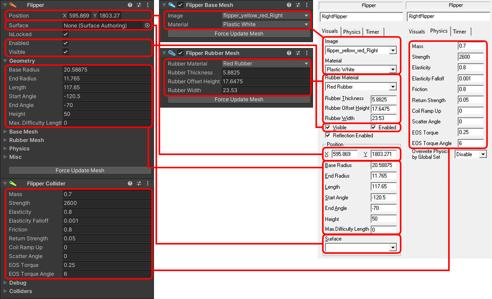

Unity Components
When loading or creating a table in Unity, what you're creating is a hierarchy of GameObjects, the basic building blocks of Unity scenes. By default we group game items by their type when importing, but you can arrange them however you want.
To give the GameObjects behavior during gameplay, we add components onto them. VPE comes with a large number of components that are used to set up and control the game mechanisms of the table, and advanced programmers can contibute new ones.
If you've never heard about GameObjects or components, we recommmend you read through the links in the first two paragraphs. They are short, to the point, and a much better introduction than we could provide here.
Components vs Game Items
In Visual Pinball, components are what you see in the options panel when you click on a game item. You'll typically find sections for adjusting physical behavior, visual display, and geometric shape of the game item you're editing. Internally, all of these sections belong to the same game item.
In VPE, we have separate components for each of these sections. There are four different types of components:
- The Main Component represents the actual game item.
- A Collider Component adds physical behavior to the game item. It defines how the item interacts with other objects, for example what bounciness, friction and randomness is applied to a pinball hitting the item.
- Mesh Components generate meshes, i.e. the geometry used to render the object on the playfield. The results are the procedurally generated 3d objects rendered in the scene.
- Animation components apply movement to the game item. If the entire object is moving (for example a flipper), that is handled by the collision component, but for items where only parts move (e.g. the plate of a gate, or the ring of a bumper) these components apply the movement to the GameObject.
Let's look at a flipper:

Here, we see the main component (Flipper), the collider component (Flipper Collider), and two mesh components (Flipper Base Mesh and Flipper Rubber Mesh) inside VPE compared to Visual Pinball. While the main and collider component sit on the base GameObject, each mesh component is on its own child GameObject. This is how Unity works - a GameObject only contains one component of each type.
Note
Internally, VPE still keeps a single set of data. That's why you see the collapsed Base Mesh, Rubber Mesh and Physics sections in the main component. When you change values there, the corresponding values in the other components will update at the same time. In general, you don't have to manually manage all this. When creating game items via the toolbox, the new GameObject will already have all the necessary components, as will the items created when importing a .vpx file.
This separation of logic has a few advantages. First, it's more obvious how a game item behaves. No collider component? That means the game item is not collidable. No mesh component? It's (permanently) invisible. But there are other advantages, as you will see in the next section.
Combining Components
VPE allows you to mix and match components onto game items. For example, for a given game item, you could assign a collider or mesh from another type. The most common use case is replacing built-in meshes with primitives, removing the original mesh component and replacing it with a generated version. But there are other usages, like using a primitive collider on a rubber. You can also add multiple children with colliders (or meshes) for a game item.
We call this parenting. The game item that overrides a given behavior is still created, but serves as a parent container to other game items.
The advantage compared to Visual Pinball, where you would create individual game items, is that VPE treats them as one single logical entity. For example, VPE will automatically rotate a primitive flipper item when it's parented under a flipper, and events from multiple colliders will be emitted from the same parent object.
Supported Combinations
Not every game item can be parented to any other game item. It doesn't make much sense to use a flipper collider for a bumper. In fact, most of the combinations are unsupported. Here's what VPE does support so far:
| Supported Meshes | Supported Colliders | Supported Animators | |
|---|---|---|---|
| Bumper | Bumper Base, Bumper Cap, Bumper Ring, Bumper Skirt, Primitive | Bumper | Bumper Ring, Bumper Skirt |
| Flipper | Flipper Base, Flipper Rubber, Primitive | Flipper | |
| Gate | Gate Bracket, Gate Wire, Primitive | Gate | Gate Wire |
| Hit Target | Hit Target, Primitive | Hit Target | Hit Target, Drop Target |
| Kicker | Kicker, Primitive | Kicker | |
| Light | Light, Primitive | ||
| Plunger | Flat Plunger, Plunger Rod, Plunger Spring | Plunger | Plunger |
| Primitive | Primitive | Primitive, Ramp, Wall | |
| Ramp | Ramp, Primitive | Ramp | |
| Rubber | Rubber, Primitive | Rubber, Surface, Primitive | |
| Spinner | Spinner Bracket, Spinner Plate, Primitive | Spinner | Spinner Plate |
| Surface | Surface, Primitive | Surface, Primitive | |
| Trigger | Trigger, Primitive | Trigger | Trigger |
Naming Conventions
In order to maintain backward compatibility with Visual Pinball, VPE relies on naming conventions to parent one game item to another.
There are two suffixes that have special meaning for VPE:
_Meshapplies the game item's mesh to its parent_Colliderapplies the game item's collider to its parent
For example, if in Visual Pinball you name a primitive LeftFlipper_Mesh, VPE will look for a LeftFlipper game item and replace its mesh with the mesh of that primitive. In other words, it will parent LeftFlipper_Mesh to LeftFlipper and disable LeftFlipper's original mesh.
Another example: If in Visual Pinball you name a rubber LeftSlingshot and two primitives LeftSlingshot_Collider_Soft and LeftSlingshot_Collider_Hard, VPE will disable the collider of LeftSlingshot and use both the other colliders instead. During gameplay when the ball hits either LeftSlingshot_Collider_Soft or LeftSlingshot_Collider_Hard, the Hit event will be emitted on LeftSlingshot.
Warning
When you export to .vpx and you have parented items that don't follow the naming convention, the parenting will get lost when re-importing the table into VPE. In the future, VPE may offer to (or even automatically) rename the parented children on export, but that's still on our TODO list.
Visibility
In order to determine whether a game item is visible, VPE looks at the hierarchy and the mesh components of its GameObject. If a game item has no mesh component, its automatically set to invisible. It's also invisible if the GameObject is set to inactive (the checkbox at the top left in the Inspector).